How Your Donation Helps
🧠 Stroke Recovery
Hospital care, rehabilitation, follow-up appointments, and ongoing treatment.
💊 Medication
Prescription medicines, medical supplies, and continuing treatment.
🩻 Medical Tests
MRI, CT scans, X-rays, ultrasounds, blood tests, and specialist investigations.
🫁 Asthma Care
Medication, consultations, and respiratory treatment.
🦴 Spinal Surgery
Support toward my lumbar spinal surgery that has been delayed since 2024.
🦵 Therapy
Physical therapy, speech therapy, and rehabilitation.
My Recovery Journey
Recovery has been a long and challenging journey. Since suffering my stroke in April 2026, I have been attending medical appointments, undergoing numerous diagnostic tests and continuing treatment while trusting God every step of the way.
Alongside stroke recovery, I continue living with rheumatoid arthritis, asthma, vertigo, chronic lower-back pain caused by lumbar spondylitis, speech difficulties, vision problems, dizziness, and recurring swelling in my feet.
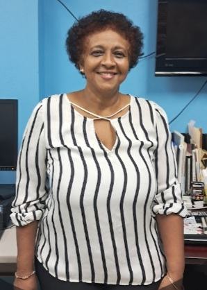
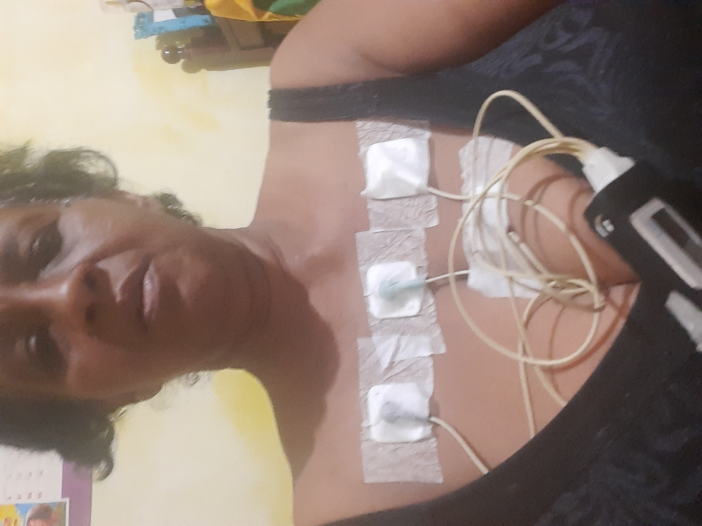
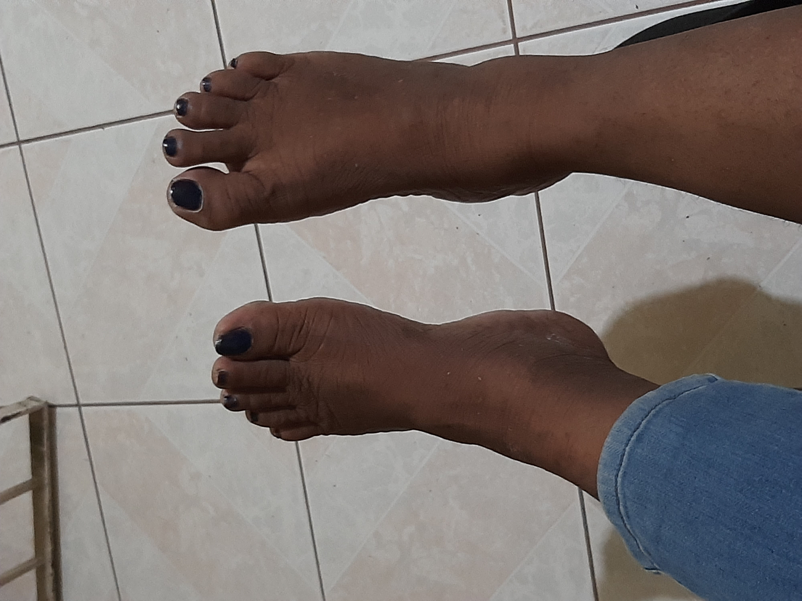
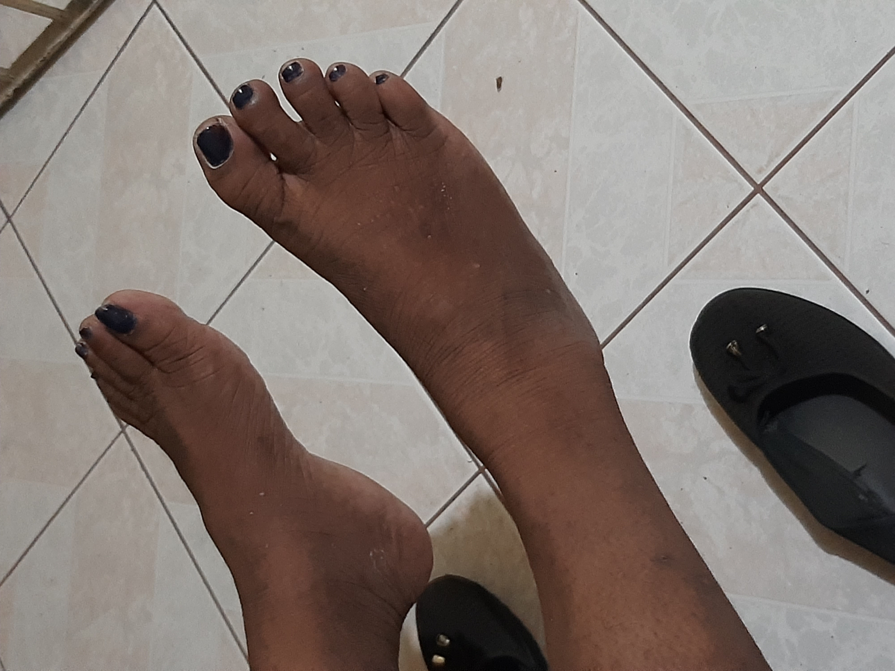
Medical Expenses
🧠 Stroke Recovery
Hospital care, specialists, medication, ongoing treatment, speech recovery and rehabilitation.
🏥 Medical Bills
Hospital expenses, doctor consultations, follow-up appointments, emergency treatment and specialist care.
🩻 Diagnostic Testing
MRI scans, CT scans, X-rays, Ultrasounds, blood tests, ENT evaluations, vision assessments and neurological investigations.
🫁 Asthma Care
Medication, consultations, inhalers, respiratory treatment and ongoing monitoring.
🦴 Spine Surgery
Support toward my lumbar spine surgery, which has unfortunately been delayed since 2024 because of financial hardship.
🦵 Physical Therapy
Weekly physical therapy, speech therapy, rehabilitation, mobility exercises and pain management.
📄 Verified Medical Documents
To provide transparency and reassure donors, I have included selected medical documents supporting my diagnosis, ongoing stroke recovery, required testing, specialist referrals and delayed spinal surgery. For privacy and security, personal information, registration numbers, doctor signatures and other sensitive details have been professionally redacted.
🧠 MRI Brain Request
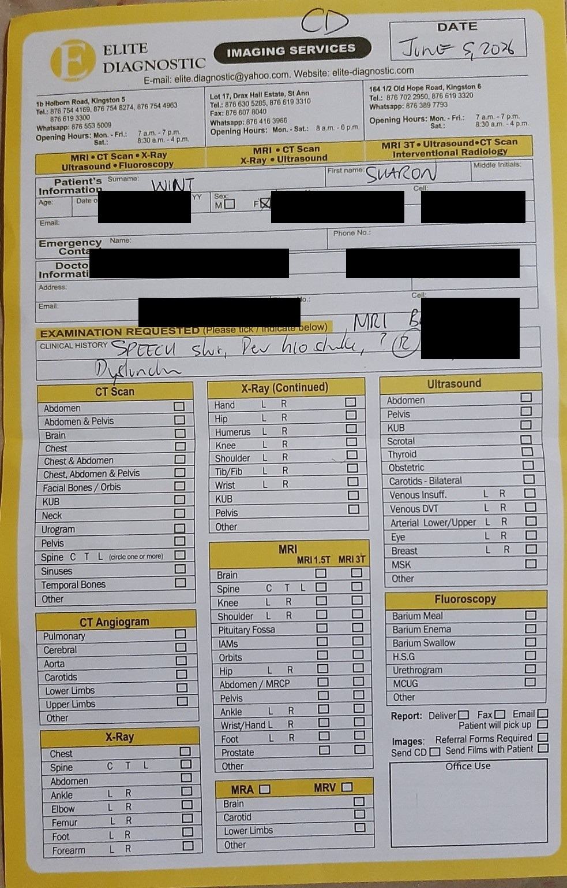
This referral was issued after my stroke and requests an MRI Brain to investigate speech changes, vertigo and neurological symptoms.
❤️ Echocardiogram Request
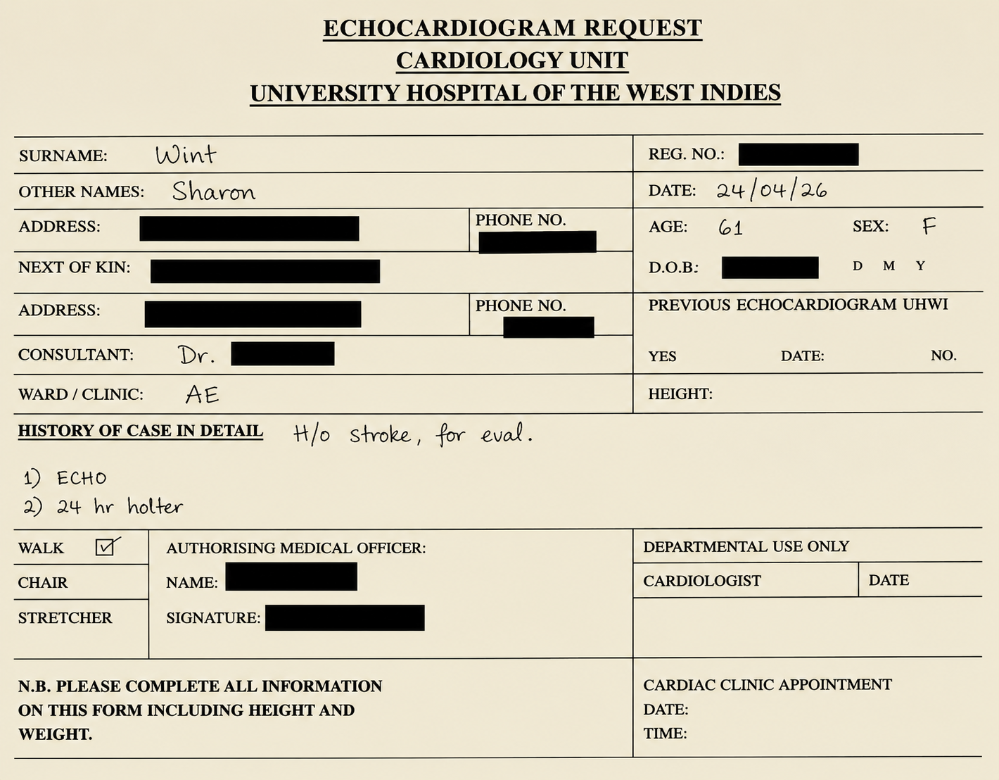
This hospital referral requests cardiac investigations, including an echocardiogram and Holter monitoring, as part of my post-stroke medical evaluation.
📨 Hospital Referral Letter
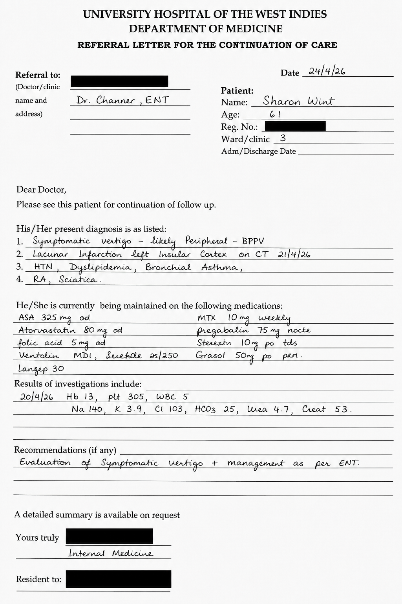
This referral summarises my diagnoses following my stroke, including vertigo, asthma, rheumatoid arthritis and the recommendation for continued specialist care.🏥 Surgery Cost Estimate
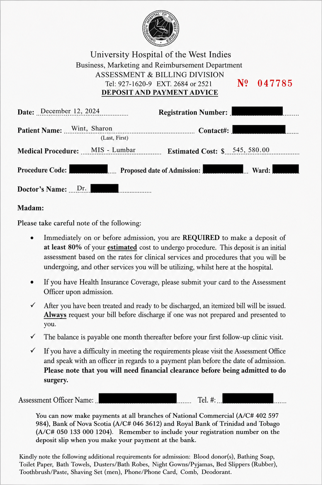
This hospital estimate documents the projected cost of my lumbar spine surgery. The surgery has been delayed while I complete stroke investigations and secure funding.
🧾 Payment Agreement
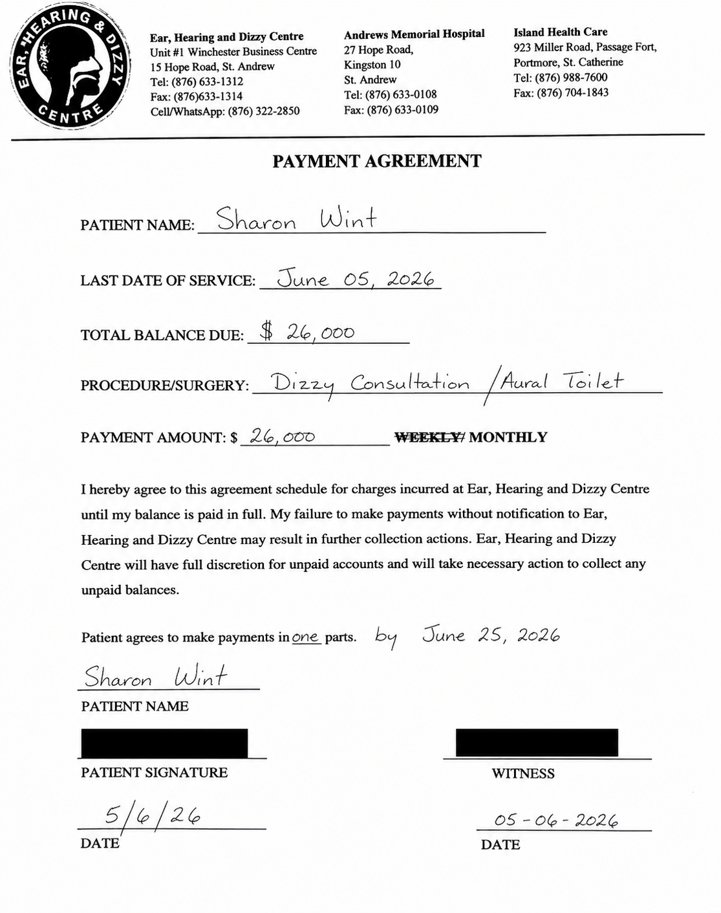
This payment agreement documents the outstanding balance for specialist ear, hearing and dizziness treatment that forms part of my ongoing medical care and recovery.
Support My Recovery
❤️ Donate NowEvery contribution brings me one step closer to recovery. Thank you for your kindness and support.
💜 Donate with PayPal
Choose whichever option is easiest for you.
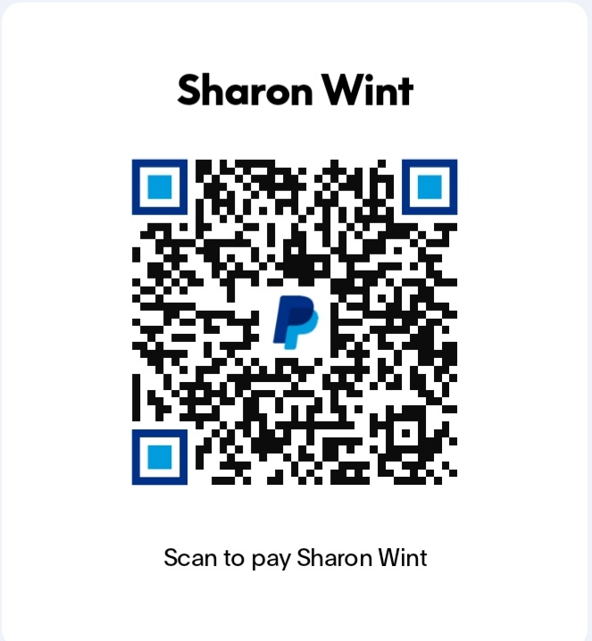
PayPal Email
sherrywinty@gmail.com
Scan the QR code above or send your donation using the PayPal email address.
This PayPal QR code is registered to Sharon Wint.🏦 Bank / Wire Transfer
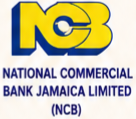
Bank
National Commercial Bank Jamaica Limited (NCB)
Account Name
Sharon Wint
Account Type
Savings
Branch
NCB UWI Mona / University
🔒 Account Number
For your privacy and security, the account number is not displayed publicly.
To receive my bank transfer details, please contact me directly using WhatsApp.
💬 Contact Sharon for Secure Bank TransferThank You
Thank you for taking the time to visit my page. Every prayer, donation and share brings me one step closer to recovery. Your kindness helps me continue treatment, purchase medication, attend therapy sessions, complete medical testing and work toward the spinal surgery that I have been unable to afford.
May God richly bless you and your family for your generosity, compassion and support. With heartfelt gratitude, Sharon Wint